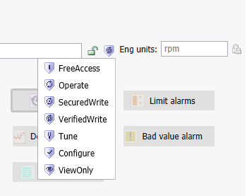
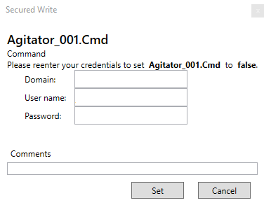
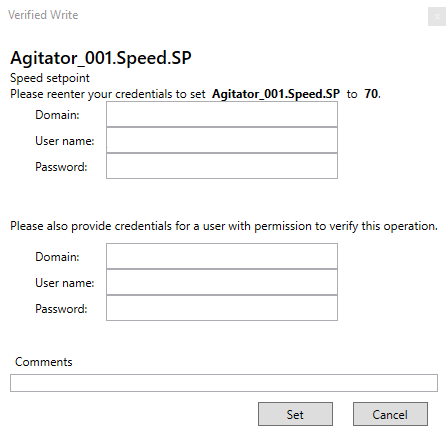

Module 8 — Security | Pages 477-480

Section 3 – Signed Writes
Section 3 – Signed Writes
Introduction
Operators interact with objects through the individual attributes of the objects. The attributes can
be assigned with security classifications that determine the level of authentication required for
operators to write to attributes at runtime.
Security Classifications for Object Attributes
A user-writable attribute listed in the Object Editor can be modified by operators at runtime and
have an associated security control, which is used to modify its runtime security classification. If
the security classification of an attribute is configurable, click the Security control and make a
selection.
FreeAccess: Anyone can write to free-access attributes.
Operate: Operators with the Can Modify “Operate” Attributes permission can write to
Operate attributes.
SecuredWrite: Operators with the Can Modify “Operate” Attributes permission can write
to SecuredWrite attributes, but write operations require authentication using user name
and password.
VerifiedWrite: Operators with the Can Verify Writes permission can verify write operations
to VerifiedWrite attributes.
Tune: Operators with the Can Modify “Tune” Attributes permission can write to Tune
attributes.
Configure: Operators with the Can Modify “Configure” Attributes permission can write to
Configure attributes.
ViewOnly: Operators can read Read Only attributes in runtime. Read Only attributes are
never written to at runtime, regardless of the operator’s permissions.
This section describes security classifications for object attributes, including configuring Secured
Writes and Verified Writes and using them at runtime.

Secured Writes and Verified Writes
You can assign the SecuredWrite or VerifiedWrite security classification to a configurable attribute.
These security classifications require authentication to perform runtime writes to the configured
attribute. With authentication, users can write to such attributes by:
Any assignment in a script that sets the value of the attribute, such as A=B, where A
references an attribute that is configured for SecuredWrite or VerifiedWrite security
classification
Any action in an animation graphic that alters the value of an attribute that has
SecuredWrite or VerifiedWrite security classification, such as a user input, a slider, or any
other such action
Operators can write to attributes configured with the SecuredWrite or VerifiedWrite security
classification, even if another user is logged on. This does not affect the session of the logged on
user:
The operator must have the Can Modify “Operate” Attributes operational permission to
perform a VerifiedWrite.
The verifier must have the “Can Verify Writes” operational permission to confirm the
VerifiedWrite.

Section 3 – Signed Writes
The Verified Write dialog box shows the same information, but provides fields for entering operator
credentials as well as verifier credentials.
Signed Write Events
Following a Secured Write or Verified Write operation, a security event is written to the event log
that includes information such as:
Event type stamp
Operator name
Verifier name, if any
Type of write, either Secured Write or Verified Write
Comment, if any entered by user for the operation
Reason description
Review the key concepts section above for the core topics discussed.
Consider how the concepts in this lesson fit into the broader System Platform and OMI framework.